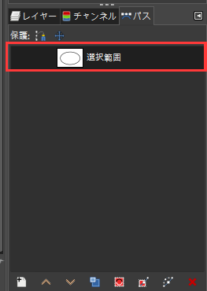
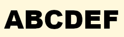
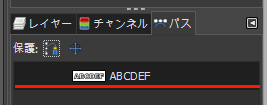
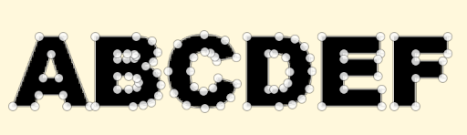

レイヤーからパスへ
レイヤーの編集状態の中には、パスとして抽出可能なものもあります。 パスはすべてのレイヤーから独立しているため、一度パスに変換してしまえば、そのパスを使って任意のレイヤー上に塗りつぶしや描画などの操作を行うことができます。
ここではレイヤー上に作成した選択範囲をパスに変換する方法と、テキストツールで作成した文字列をパスに変換する方法を紹介します。
選択範囲をパスに変換
レイヤー上に作成した選択範囲からパスを作成します。
ツールボックスのファジー選択ツールを使って楕円形の選択範囲を作成します。
Note
サンプル画像は輪郭がはっきりしているので、ツールボックス下部のツールオプションで しきい値 を 0 に設定しています。
なお、選択範囲の作成は、ファジー選択ツール以外のどの選択ツールで実行しても問題ありません。
選択したい範囲内をクリックすれば、同一色の範囲が選択されます。
右クリックして表示されたコンテキストメニューから 選択 > 選択範囲をパスに を選択します。一見何の変化もありません。
Tip
メニューバーの 選択 > 選択範囲をパスに でも同じ操作ができます。
右パネルのドック下部で パス タグを選択すると、 選択範囲 というパス名の新しいパスが作成されています。

Note
パスを複数作成した場合に備えて、パス名は後で見て分かる名称に変えておきましょう。
パス一覧から新規に作成されたパスの上で右クリックし、コンテキストメニューから パスの編集 を選択します。
パスが編集できるようになります。
文字列をパスに変換
テキストツールで作成した文字列をパスに変換します。
左パネルのツールボックスからテキストツールを選択し、文字列を書きます。

Tip
テキストツールを使って書かれた文字列は、独立したレイヤーとして管理されます。
右パネルのタブレイヤーの一覧で、テキストのレイヤーが選択されていることを確認します。
画像ウィンドウの文字列上で右クリックして、表示されたコンテキストメニューから レイヤー > テキストをパスに を選択します。一見何の変化もありません。
Tip
メニューバーの レイヤー > テキストをパスに でも同じ操作ができます。
右パネルのドック下部で パス タグを選択すると、新しいパスを確認できます。

Note
パスを複数作成した場合に備えて、パス名は後で見て分かる名称に変えておきましょう。
パス一覧から新規に作成されたパスの上で右クリックし、コンテキストメニューから パスの編集 を選択します。
パスが編集できるようになります。

用語一覧
| 用語 | 英語 | 意味 |
|---|---|---|
| パス | paths tool | パスの編集や作成を行う |
| レイヤー | layer | キャンバスの上に重ねられた、描画のための層 |
| 選択範囲 | selection | 主に選択ツールで指定された範囲。白と黒の動く破線で囲まれ、切り取ったり塗りつぶしたりできるようになる |
| テキスト | text tool | テキストレイヤーの編集作成を行う |